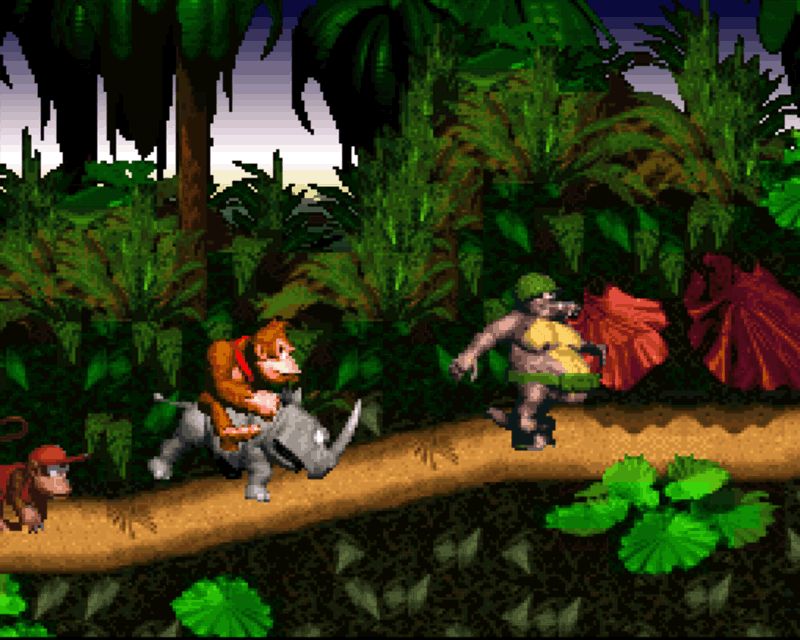
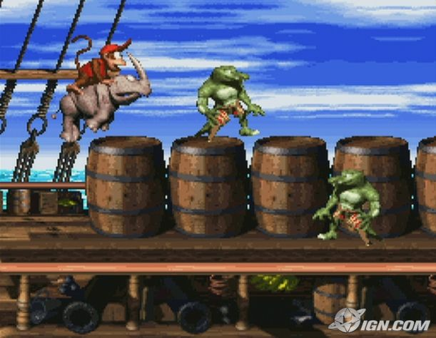
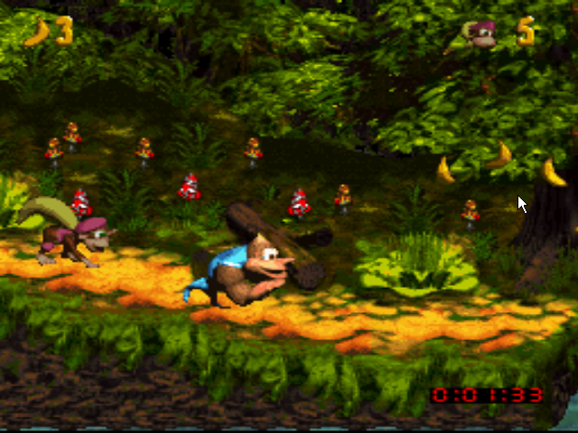

Donkey Kong
Depuis la sortie de la SNES en 1991, Super Mario World n'a pas trouvé de réel sucesseur pour le titre de meilleur jeu de plate-forme de la console. Rareware propose donc Donkey Kong Country, l'un des jeux de plate-forme les plus révolutionnaires de l'histoire. Les moyens mis en oeuvre pour produire ce jeu ont été colossaux et la publicité très présente, et le résultat est au rendez-vous. L'intrigue n'est pas du même genre que les traditionnelles princesse enlevées par un tyran maléfique tels que Peach et Bowser, en effet il faut aller chercher des bananes dispersées dans six mondes reliés les uns aux autres.
Lien des articles :
- Mario Museum
- Mario Museum
- Youtube


